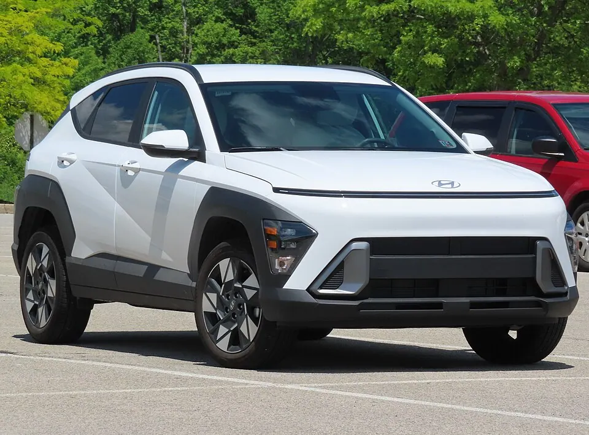

복합연비·전비
4.8–19.8 (동력별 단위 확인). 휠·구동·세부 사양이 다르면 같은 모델도 값이 달라집니다.
현대 · SX2
가솔린과 전기 사양을 한 차종에서 확인할 수 있습니다. 2WD·4WD, 17·19인치 조건에 따라 표시연비와 전비가 달라집니다.

가솔린은 구동 방식과 휠 크기, 전기차는 배터리 구분과 휠 크기가 핵심 조건입니다. 전기 사양의 km/kWh와 가솔린의 km/L는 서로 직접 비교하지 않습니다. 막대는 동력 방식별 최고값을 표시하며, km/L와 km/kWh는 서로 비교하지 않습니다.
공식 등록 사양에서 연비와 세금 계산이 가능한 조건을 추렸습니다. 공개되지 않은 값은 비워 두었습니다.
| 공식 등록 사양 | 동력 | 복합 | 도심 | 고속 | 1회 주행 | 연 자동차세 | 2만km 에너지비 |
|---|---|---|---|---|---|---|---|
| 코나(SX2) 1.6T-GDI 2WD 17인치 | 휘발유 | 13 km/L | 11.5 | 15.5 | — | 290,836원 | 약 2,859,862원 |
| 코나(SX2) 2.0 가솔린 2WD 17인치 | 휘발유 | 13.6 km/L | 12.6 | 15 | — | 배기량 연결 안 됨 | 약 2,733,691원 |
| 코나(SX2) 1.6T-GDI 4WD 18/19인치 | 휘발유 | 11.2 km/L | 10 | 13.1 | — | 배기량 연결 안 됨 | 약 3,319,482원 |
| 코나(SX2) 1.6GDI 하이브리드 18인치 | 하이브리드 | 18.1 km/L | 18.6 | 17.5 | — | 287,560원 | 약 2,054,044원 |
| 코나(SX2) 1.6GDI 하이브리드 17인치 | 하이브리드 | 19.8 km/L | 20.8 | 18.6 | — | 배기량 연결 안 됨 | 약 1,877,687원 |
| 코나(SX2) 1.6GDI 하이브리드 17인치(빌트인캠) | 하이브리드 | 18.9 km/L | 19.4 | 18.2 | — | 배기량 연결 안 됨 | 약 1,967,101원 |
| 코나(SX2) 일렉트릭(기본형) 17인치 | 전기 | 5.5 km/kWh | 6.1 | 4.8 | 311km | 130,000원 | 충전단가 입력 |
| 코나(SX2) 일렉트릭(항속형) 17인치 | 전기 | 5.5 km/kWh | 6.1 | 5 | 417km | 130,000원 | 충전단가 입력 |
| 코나(SX2) 일렉트릭(항속형) 19인치 | 전기 | 4.8 km/kWh | 5.2 | 4.4 | 368km | 130,000원 | 충전단가 입력 |
자동차세는 비영업용 승용 신차 정상세액과 지방교육세 30%를 합산했습니다. 연납·차령 경감·개별 감면은 제외합니다. 전기차 충전비는 이용 요금 차이가 커 기본값을 만들지 않습니다.
4.8–19.8 (동력별 단위 확인). 휠·구동·세부 사양이 다르면 같은 모델도 값이 달라집니다.
130,000원–290,836원. 실제 고지액은 등록 시점과 차령에 따라 달라질 수 있습니다.
내연기관은 거리 ÷ 복합연비 × 오피넷 단가로 계산합니다. 전기차는 실제 충전단가를 입력해 계산합니다.